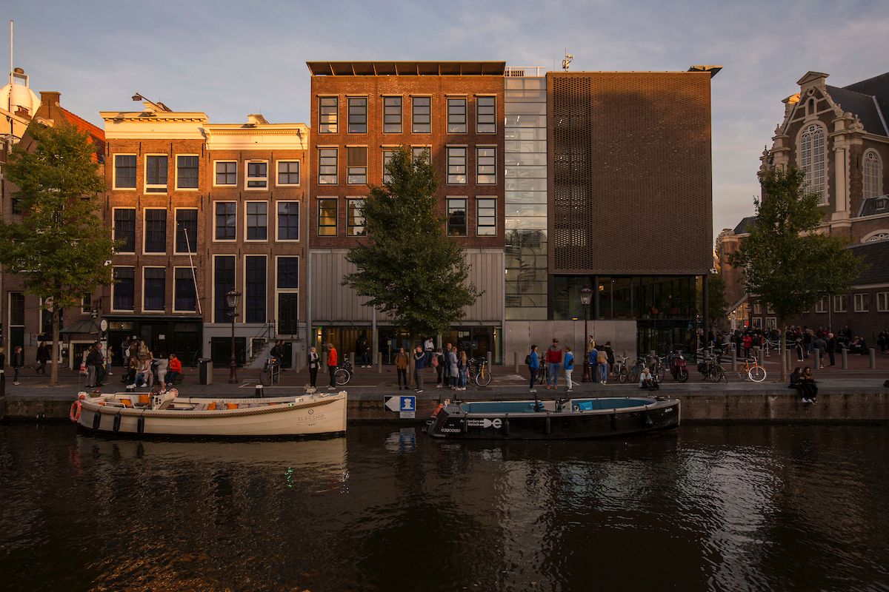

Anne Frank Huis (Amsterdam)
Link naar de site van het museum
Anne Frank was een Joods meisje.
leefde tijdens de 2de wereld oorlog.
Ze zat daar 2 jaar ondergedoken.
Het museum heeft nog steeds de dagboeken van Anne Frank.
